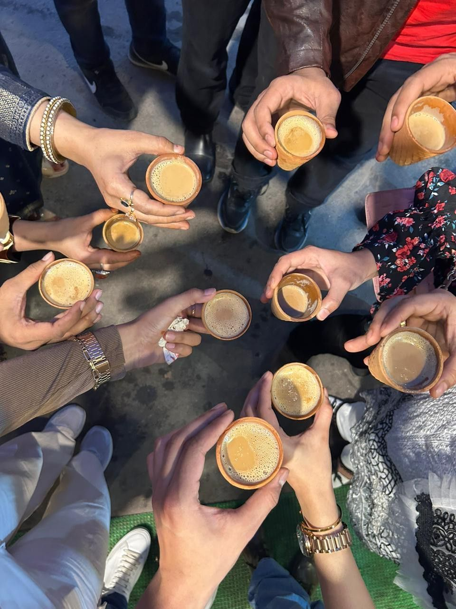

Some of my best works.



See More on my Instagram
I am currently studying Computer Science in IGDTUW. Here, i have been learning different coding languages along with soft skills.
My hobbies are Dancing, painting, travelling and enjoying some quiet time in nature.
I would love to visit Singapore, Thailand and Northeast- India.
Well I am someone who loves Pinterest for study motivation and aesthetics ad while I do not have any specific role model for the same, I do love Blair Waldorf and Tam Kaur for the same.